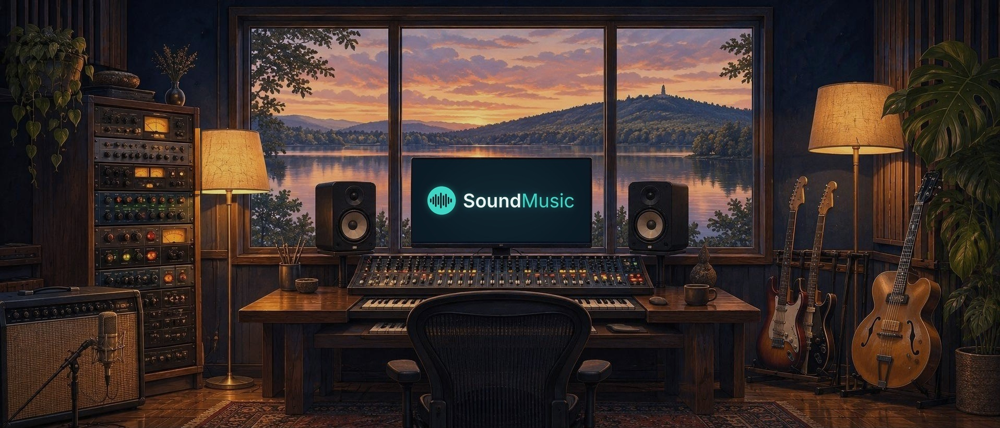
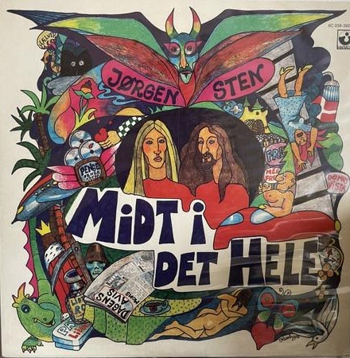
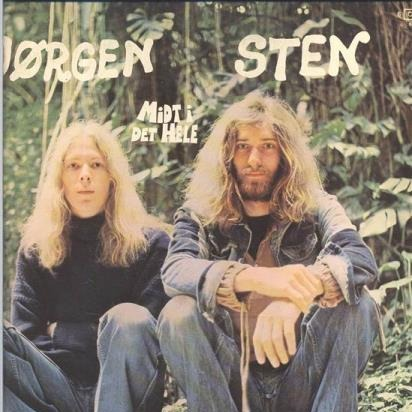
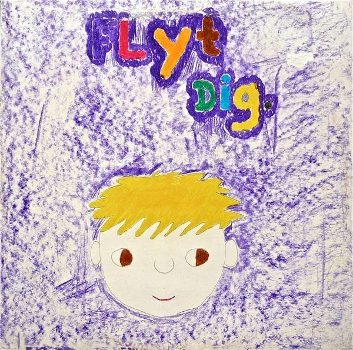
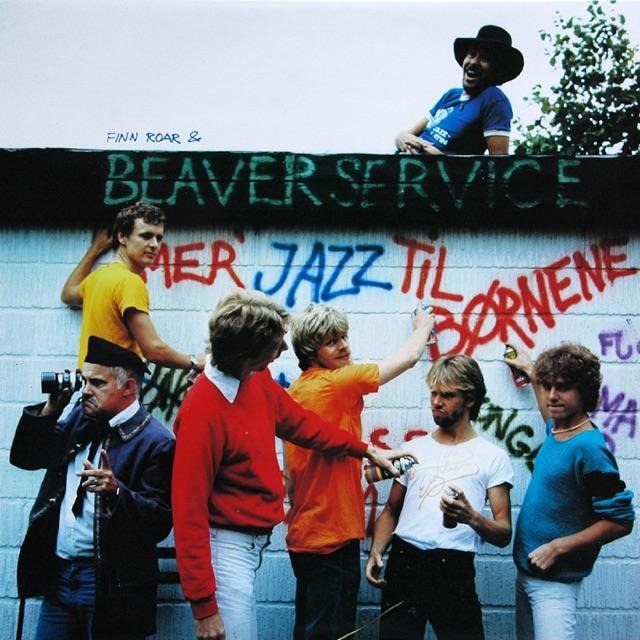
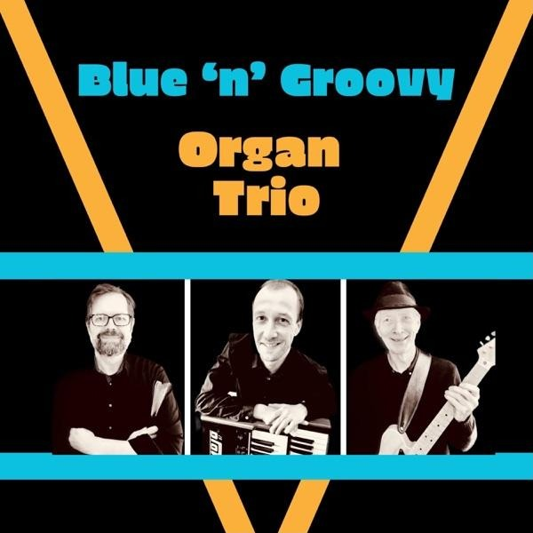

SoundMusic Studio – Jørgen Messell, Søhøjlandet

SoundMusicLydstudie
Ved bordet med udsigt over søen spiller Jørgen Messell alle instrumenter og står for arrangement, produktion, indspilning og mastering.
Studiet har lavet omkring 40 cd’er – fire med Strøm Band og en lang række undervisningsudgivelser for Dansk Sang, hvor mastering også er lavet her.
Lydeksempler
Strøm Band – musik og tekst af Ole Strøm, indspillet hos SoundMusic. Nye sange kommer på YouTube to gange om ugen frem til februar 2027 – her vises tre tilfældige af dem, der er udkommet, og altid den nyeste. Se hele kanalen →
Jyllands akvarium
Midnight Cowboy
Strøm Band
Fire cd’er, 45 sange. Jørgen Messell: diverse instrumenter, arrangement, produktion og indspilning. Klik på en cd for at se sangene.
Når engle får vinger
- Sådan en mand som mig
- Midnight Cowboy
- Skagen og alle de andre
- På en mælkebøttedag
- Postkortdrømme
- Det er forår nu
- Nattetanker
- Casiopaiamåneklar
- Jyllands akvarium
- Født vinder
- Morgen i Danmark
- Når engle får vinger
Moders sol
- Der er dage
- Giv mig en lytter
- Udover landet
- Han passer på os
- Snart trækker månen op
- Når jeg bli’r voksen
- Tanker på havnen
- Moders sol
- Hvis der er en sandhed
- Bankende hjerte
- Bare et øjeblik
Jeg lukker dig ind
- Mårup havn
- Der er håb forude
- Jeg lukker dig ind
- Sådan er der jo så meget
- En tur til kysten
- De søde dage
- Den første månenat
- Majorens sang
- Øjne kan sige
- Så go’nat
Daddy’s Pizzabar
- Daddys pizzabar
- Der er altid et lys tilbage
- Så længe det varer
- I en ghetto nede i Capetown
- På gensyn
- Fredag hele dagen
- Det er mørkt derude
- Som en kuling i vest
- Den sidste nål
- I din egen verden
- Håbets hotel
- Måske i morgen
Dansk Sang
Musikken til Grete Graneruds undervisningsmaterialer, udgivet af Dansk Sang – Musiklærerforeningens forlag. Jørgen Messell: alle instrumenter, arrangement, produktion, indspilning og mastering. Sanglisterne er gengivet efter Dansk Sangs butik og cd’erne. Seks af cd’erne kan høres på YouTube – se linket under hver cd.
Musisk indskoling
Grundbog
- Goddaw min kære Augustin
- Ska’ vi synge? Ja, Ja
- Abe-efter-leg
- Er Anna kommet
- Vinduespudseren
- Mester Jakob
- Kom og sig goddag til mig
- Når jeg vågner, er det dejligt vejr (Dosola)
- Halløj vi si’r igen goddag
- Hvem er her mon i dag
- Hejsaho, go’daw med jer
- Vi er allesammen vilde
- Vågn nu op
- Klokken er otte, Rebecca
- Dagen er ny
- Se nu stiger solen
Kroppen
- En indianer lister tyst af sted
- Tommelfinger, tommelfinger, hvor er du?
- Hoved, skulder, knæ og tå
- To skridt til højre
- Åh a pyh
- Du skal klappe, hvis du er i godt humør
- Vi tar en tur til Ønskeland
- Rokkesang
- Jeg har en helt fantastisk krop
- Jeg har en tommelfinger
- Vi kan danse lapada
- Boogie Woogie (The Hokey Cokey)
- Jeg gik mig over sø og land
- Kom, vi rejser os op
- Fortanden
- Sansesang
Cowboy
- Lucky
- Tom Dooley
- Hestesang
- Vi rider ud på prærien
- Hvor er nu den stakkels lille Hanne
- Cowboy, cowboy leg med mig
- Vi har lejrbål her
- Jeg er en glad lille cowboy
- Jeg er en farlig cowboy
- Blodstænk på sadlen
- En mærk’lig fyr
- En farlig cowboy rider rask afsted
- Oh, Susanna
Jul 1
- Nissefar og nissemor
- Vi kører med et nissetog
- Lille søde nissefar
- Nissen er en kunstig mand
- En lille nisse fra Amerika
- Hæl og tå og hæl og tå
- Klokeren ringed
- Nissen tog sin hue på
- Kanesang
- Er der mon en nissemand?
- Jeg vågner alt for tidligt
- Kling klong
Efterår
- Efterår
- En kastanjemand fra kastanjeland
- Fugle, fugle
- Skoven er så underfuld
- Det kan regne alle vegne
- Hvis du går omkring i skoven
- Jeg har lommerne fulde af kastanjer
- Gå en tur i efterårsskoven
- Efterårstræerne svinger og svajer
- Så fik vi kulden
- Vindsang
Vand
- Vandsang
- Et vandmolokyle
- Hullabalubalej
- Tre små fisk (Three Little Fishes)
- Krabbesang
- Det er sjovt at svømme
- Når vi sejler op og ned
- Vi sidder i en robåd
Høst
- Solen brænder rød og hed
- Æblemand
- Alt det, som gror
- En pige gik i enge
- Vil I vide, hvordan bonden
- Lotte gik
- Æbledans
- Oppe i Norge
- Velkommen ud med min høstmaskine
- Og gå så, og gå så, og gå så din vej
- Majssang
Påske
- Snart er sne og kulde væk
- Se, jeg fandt en vintergæk
- Påskehønen
- Kokken Knud
- Hvilket postbud, en due
- Jeg cykler rundt i byen
- Gækkesang
- Hønseleg
- Påskesang
- På landevejen går Jens Post
Himmelrummet
- Go’ morgen sol
- Futte-futte-futtog
- Der var engang en pige
- Rummanden er parat
- Vi svæver i rummet
- Se på månen
- Jeg vil tælle stjernerne
- Tænk hvis jeg sad på månen
- Vi flyver op til måneland
- Har du aldrig set en marsmand danse?
- Rejse i tid og rum
- Hvad mon stjerneskud er til?
Fastelavn
- Hjulene på bussen
- Kan du gætte, hvem jeg er? (Fastelavnsfest)
- Lodi lodi
- Nu er det fastelavn
- Ved vejen lå et hus
- Nu går vi rundt i en stor, stor ring
- Tante Musika
- Det er fastelavn
- Mit navn er stadig fastelavn
- Fastelavns-rise-vise
- Nu er det fastelavn igen
- Fastelavnssangen
Jul 2
- Den første kat
- Nissen og rotterne
- En julenisse rejste
- Påskehønen
- Det er jul
- Klokker
- Juleaftens alfabet
- Og nissen sad på loftet
- En bitte nisse lister rask af sted
- Og ræven rask over isen
- Julefeen
- Kom, lad os fælde et juletræ
- Julegaven
Fugle
- Fuglereden
- Jeg gik mig ud om kvælden
- Flyvesang
- Den rige fugl kommer susende
- Hvilket postbud, en due
- Flyv lille træfugl
- Oppe på flagstangen
- To fugle sad i haven
- Mit dueslag jeg lukker op
- Højt på en gren en krage
- Papegøjesang
Cirkus
- Cirkus, hvem vil se på cirkus
- Vi rider rundt i manegen
- Det er smaddersjovt at være cirkusklovn
- Bar’ man ku’ ta’ een med hjem
- Tryllesang
- Vi er alle akrobater
- Slangetæmmerdans
- Jeg er en stærk person
- Linesang
- Jonglører jonglerer
- Nu er alting lukket
Trafik
- Manden der havde travlt
- Kathrine, pas på
- Ti små cyklister
- Hul i hovedet
- Trafiklyset
- Hospitalsblues
- Min cykel
- Cykelsang
- Når du går på gaden
- Se dig for
- Kasketten
Forår – på skovtur
- På skovtur
- Vil du med i skoven
- Inde i skovene
- Jeg tror, jeg snupper otte knopper
- Skovsangen
- Skovsang
- Og det var en skærsommerdag
- Kom ud og lege
- Maj vi har
- Vejret blev blidere
- Millioner af anemoner
- Fuglereden
- Der kom en pige gående
Året
- Årstiderne
- Hele året rundt
- Kalendervender Tage
- Mandag købte han en rose
- Kalendersang
- Din fødselsdag er en særlig dag
- Og dem der’ født i januar
- Året rundt
- Så går vi rundt om en enebærbusk
- Goddag, goddag og tillykke
- Jonas har fødselsdag
Sommer
- Du ska inte tro det blir sommar
- Nu kommer den dejlige sommer
- Krible-krable-land
- Natsværmersang
- Sommer i Danmark
- Nu spiller alle alfer
- Ferie nu
- Spring ud
- Min blå pyjamas
- Larvens sang
- Honningbien
- Stilhed glatter havets rynker
- Sankthanssang
- Sommerbrevet
Vinter
- Ka’ det aldrig bli’ vinter
- Januar og mørketid
- Vinter, vinter grå
- Og ræven rask over isen
- Februar
- Forkølelsessang
- Snemand Frost og frøken Tø
- Bar’ det snart ku bli forår
- Vintertid
- Fuglebrættet
- Sneen daler tyst og tæt
- Nu sner det
- Snart er sne og kulde væk
- De gamle mænds sang
Familie
- Ved vejen lå et hus
- Der sad en kælling i en båd
- Noget om en mærkelig familie
- Der var ti små børn i en stor seng
- Sigurd
- Bare det var søndag altid
- Var du med den gang da de døvstumme sang
- Familiesang
- Vi er en stor familie
- Lommerne
- Bedstefar bestemmer
Halloween
- Hallo Halloween (Høybye)
- Lygtemanden
- Hvor er mit slik mon?
- Heksehatte
- Heksen plukker de sorteste bær
- Spøgelse giv lyd
- Eksisterer ikke?
- Slik eller ballade
- Heksemutter lod en tudse
- Heksedans
- Heksepizza
- Dødmand
- Natten
Blokfløjte, kazoo og spil
Fløjtebogen 1
- Jeg gik mig ud om kvælden
- Slangetæmmerdans
- Irland – Sømandssang
- Fløjte-Anders
- Fløjtesang
- Stille nu
- Jeg vil så gerne
- Det kan regne alle vegne
- De fire vinde
- Hvor er min fløjte
Fløjtebogen 2
- Flyvesang
- Sneen daler tyst og tæt
- Fastelavn
- Inde i skovene
- Ferie nu
- Gå en tur i efterårsskoven
- Marias vuggesang
- Vinter, vinter grå
- Her er et gækkebrev fra mig
- Vejret blev blidere
- Spring ud
- Og nissen sad på loftet
- Kasketten
Fløjtebogen 3
- Toner er så mange ting
- Efterår
- Fluetæller Carlsen
- Peru – Indianerfløjten
- Noget om en dejlig nat
- Ud over prærien
- Dyb qwela
- Kazoo-blues
- Bar’ man ku’ ta’ een med hjem
- Tom Dooley
- Et nu efter regn
- Se, jeg fandt en vintergæk
- Luis qwela
- Gang-blues
Fløjtebogen 4
- Qwela med fis
- Qwela-duo
- Sig månen langsomt hæver
- Peter Pan
- Stolt Signild
- Og gå så, og gå så, og gå så din vej
- Gayment
- Knox
- Den sømand, han må lide
- Hil dig, frelser og forsoner
- Sensommervise
- Nu falmer skoven trindt om land (Nebelong)
- Nu tændes tusind julelys
- Et barn er født i Betlehem
- Tænk hvis jeg sad på månen
- Nu spiller alle alfer
- Fløjtenissen
- Ebbe Skammelsøn
- Allemande
- Stress
- I østen stiger solen op
- Vintertid
- Solen brænder rød og hed
- Tranedans
- Regnvejrsdag i november
- Dejlig er den himmel blå
Spil jazz – på kazoo
- Oh, When The Saints
- Nu stopper du
- St. James Infirmary
- Come Dance With Me
- Everybody Loves Saturday Night
- That’s What I Do
- The Groove Activator
- Nr. 8–21: instrumental- og akkompagnementsversioner af alle syv
Spil blues – på kazoo
- Ja, jeg vil danse
- What A Sad Day
- My Girl Left Me
- The Blues Is Sweet
- Min guitar, den er væk
- Det var ikke mig, der gjord’ det
- Wanna Dance With You Girl
- Nr. 8–21: instrumental- og akkompagnementsversioner af alle syv
Spil på kazoo
- Kazoo-Kazoo
- Bilsang
- Første Qwela
- Tobias’ Qwela
- Dyb Qwela
- Tonse-Blues
- Kazoo-Blues
- Gang-Blues
- Bejle-Blues
- Kokken Knud
- Kazoo Koncert
- Desuden instrumental- og akkompagnementsversioner (X Qwela, X Blues i E, X Blues i Dm, X Kokken Knud, X Kazoo Koncert m.fl.)
Violin-spillebogen 2
- Tom Dooley
- Ud over prærien
- Oh, Susanna
- Ved vejen lå et hus
- Lodi lodi
- Tante Musika
- Se, jeg fandt en vintergæk
- Maj vi har
- Fuglereden
- Et nu efter regn
- Skovsangen
- En pige gik i enge
- Mester Jakob
- Hullabalubalej
- Bar’ man ku’ ta’ een med hjem
- Dyb qwela
- Flyv lille træfugl
- Limbo Rock
- Jeg er en glad lille cowboy
- Vi har lejrbål her
- Kan du gætte, hvem jeg er? (Fastelavnsfest)
- Fastelavns-rise-vise
- Snart er sne og kulde væk
- Vejret blev blidere
- Jeg gik mig ud om kvælden
- Noget om en dejlig nat
- Vil du med i skoven
- Og det var en skærsommerdag
- Sig månen langsomt hæver
- Puff, hvor kan man finde (Puff, the Magic Dragon)
- Stolt Signild
- Vi er allesammen vilde
- Qwela med fis
- Vi kan danse lapada
Alle kan spille
- Mester Jacob
- Bilsang
- Rokkesang
- Jeg er en farlig cowboy
- Der sad en kælling i en båd
- Alt det, som gror
- På skovtur
- Vil du med i skoven
- Fugle, fugle
- Eksisterer ikke?
- Klokkeren ringed’
- En bitte nisse lister rask afsted
- Hæl og tå
- Kanesang
- Julefeen
Alle kan spille 2
- Ro, ro, ro din båd
- Aborren svømmer
- Lucky
- Rundt i Afrika
- Januar og mørketid
- Snart er sne og kulde væk
- Stilhed glatter havets rynker
- Peter Pan
- Hullabalubalej
- Hospitalsblues
- Bar’ man ku’ ta’ een med hjem
- Fastelavns-rise-vise
- Højt i det blå i Californien
- Jens, i mår’en æ’ det markedsdaw
Musical og sanglege
Fluetæller Carlsen og julefluen
- Når det er december
- Julefeen
- Der skal skrives julekort
- Tænk at være juleflue
- Jule-slap-af-sang
- Fluetæller Carlsen
- Nr. 7–14: playback-versioner
Syv rytmiske sanglege
- Hvem mon jeg får at danse med
- Ud på gull’et
- Dav dav med dig
- Nu ska’ vi allesammen danse
- Limbo Rock
- La Cucaracha
- Tante Musika
- Nr. 8–14: versioner uden sang
Andre udgivelser
Plader hvor Jørgen Messell har medvirket som musiker, komponist eller lydtekniker.


Midt i det hele
Jørgen Messell: akustisk og elektrisk guitar, tværfløjte, 2. stemme og kor. Steen Haxø: akustisk guitar, mundharpe og sang. Sangene er skrevet af Haxø og Messell. Med Flemming Q. Møller, Pierre Dørge, Jørgen Martinsen, Peter Vangkilde, Niels Vangkilde og Morten Carlsen. Producer Ole Bredahl, indspillet i Metronome Studio efteråret 1977.
Hør Blænde ti – Jørgens komposition – på YouTube →
Hør Det er dejligt på YouTube →
- Er der moms (på sang og kærlighed) · 2:26
- Tjene penge · 3:34
- Jeg er træt · 3:40
- Præster og baroner · 3:34 (Morten B.-Smith)
- Dagens avis · 6:14
- Det er dejligt · 5:23
- Domus Vista · 4:31
- Kun · 3:59
- Vi er os (Psykolægen) · 2:48
- Emma · 3:52 (Morten B.-Smith)
- Blænde ti · 3:11 (Jørgen Messell)

Flyt Dig !
Afstikkeren, sunget af Trille. Musik: Jørgen Messell, tekst: Bodil Bredsdorff. Jørgen spiller akustisk guitar, med Jens Rugsted (bas), Ole Fick (el-guitar), H. Ottesen (klaver) og Martin Andersen (violin).
23 nye børnesange indspillet til pladen af bl.a. Gnags, Trille, Jomfru Ane Band, Kræn Bysted, Sonja’s Søstre, Povl Kjøller og Søren Kragh-Jacobsen & Biorytmerne.

Mer’ Jazz Til Børnene
Jørgen Messell: guitar. Musik af Finn Roar – bebop, salsa og caribiske rytmer for børn. Jørgen står forrest på coveret i rød trøje med spraydåsen.
- Faster Bebop
- Esso, Shell og BP
- Ribe Riffs
- Mama No
- Assimut
- Farmors Vals I
- I Don’t Have To
- Vi er ikke fra Jamaica
- Efterår
- Those Days
- Farmors Vals II

BNGOT
Indspillet i SoundMusic Studio. Jørgen Messell: el-guitar og lydtekniker. Anders Cribb: orgel og producer. Henrik Nielsen: trommer. Orgeljazz med numre af bl.a. Horace Silver, Bobby Timmons og George Duke.
- It’s On · 4:31
- The Jody Grind · 2:29
- The Chicken · 2:34
- Moanin’ · 3:58
- Mo’ Better Blues · 3:18
- Blues For C.F. · 2:56
Kontakt
Indspilning, arrangement, produktion eller mastering – skriv eller ring.
- messell@protonmail.com
- Telefon
- 29 47 63 13
- Sted
- Søhøjlandet